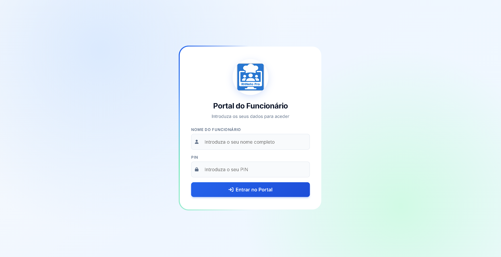
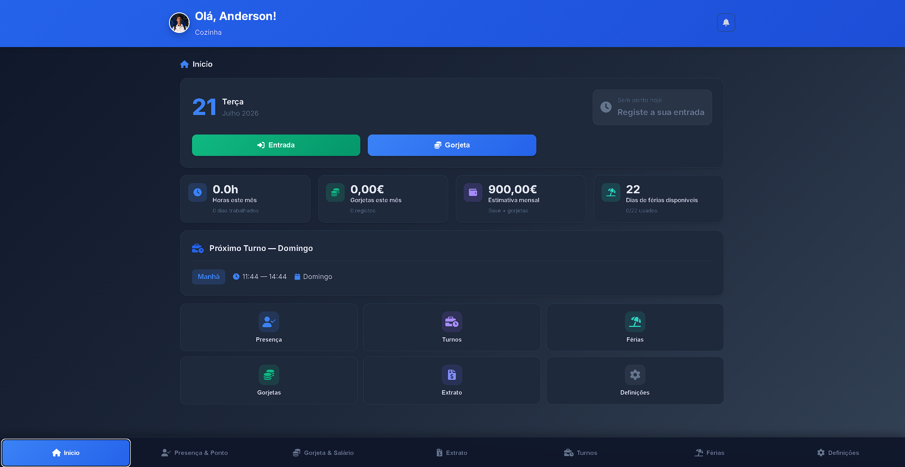
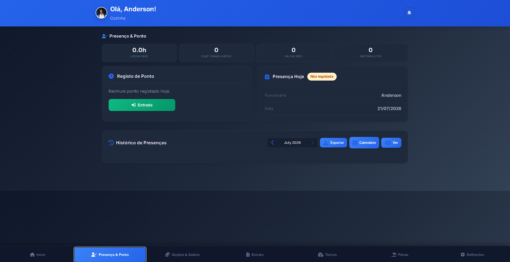
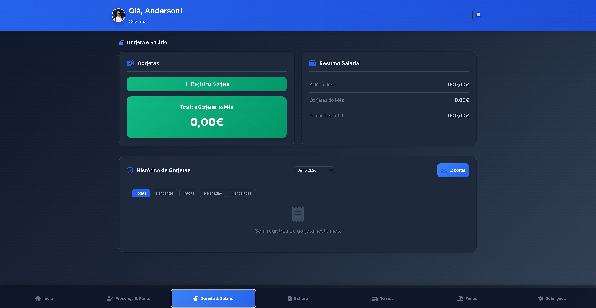
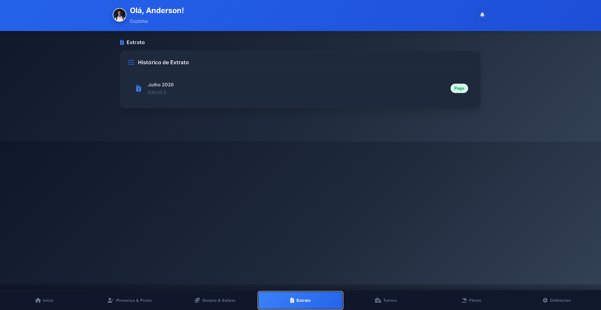
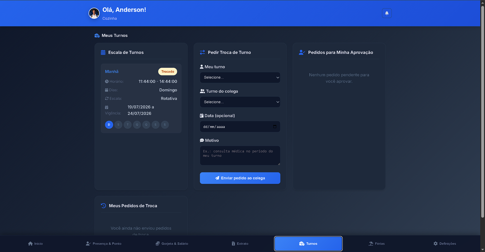
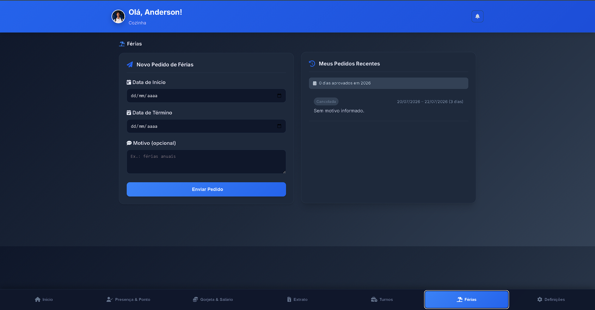
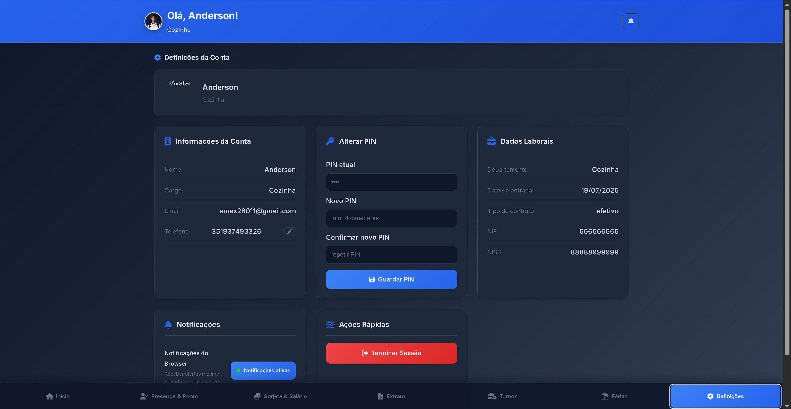

Manual do Funcionário
Guia passo a passo para usar o portal do funcionário na RHNeto Pro.
Como entrar no portal
Para aceder ao portal precisas do teu nome completo (tal como está registado pelo administrador) e do teu PIN pessoal.
- Abre o link do portal do funcionário no navegador.
- Introduz o teu nome completo no campo "Nome do Funcionário".
- Introduz o teu PIN no campo correspondente.
- Clica em "Entrar no Portal".

login.png a esta pasta.
Início
É a primeira página que vês depois de entrar. Dá-te um resumo rápido do teu dia e acesso direto às ações mais usadas.
- No topo vês a data de hoje e um botão para registares a tua entrada (ponto) diretamente.
- O botão "Gorjeta" permite registar uma gorjeta recebida sem sair desta página.
- Os quatro cartões mostram: horas trabalhadas este mês, gorjetas este mês, estimativa de salário mensal e dias de férias disponíveis.
- O cartão "Próximo Turno" mostra o teu próximo horário de trabalho agendado.
- Em baixo tens atalhos diretos para todas as outras secções (Presença, Turnos, Férias, Gorjetas, Extrato, Definições).

inicio.png a esta pasta.
Presença & Ponto
Aqui registas a tua entrada e saída todos os dias, e consultas o histórico completo de presenças.
- No topo vês um resumo do mês: horas totais, dias trabalhados, faltas e registos incompletos.
- No cartão "Registo de Ponto", clica em "Entrada" quando chegares ao trabalho.
- Depois de registares a entrada, o mesmo botão muda para "Saída" — usa-o quando terminares o turno.
- O cartão "Presença Hoje" mostra o estado atual do teu registo de hoje (registada, não registada, pendente de confirmação, etc.).
- Em baixo, no "Histórico de Presenças", podes navegar entre meses, ver o calendário, exportar os dados ou consultar cada dia em detalhe.

presenca.png a esta pasta.
Gorjeta & Salário
Regista as gorjetas que recebes ao longo do dia e acompanha a tua estimativa salarial.
- Clica em "Registar Gorjeta" sempre que receberes uma gorjeta.
- Indica o valor recebido e, se pedido, a forma de pagamento (dinheiro, cartão, etc.).
- Consulta o total de gorjetas acumuladas este mês e como isso afeta a tua estimativa salarial.
- As gorjetas registadas ficam pendentes até serem validadas pelo administrador.

gorjetas.png a esta pasta.
Extrato
Consulta o teu extrato salarial mês a mês — salário base, gorjetas e valor líquido recebido.
- Seleciona o mês que queres consultar.
- Vê o detalhe: salário base, total de gorjetas do mês e valor líquido final.
- Confirma se o pagamento desse mês já está marcado como pago pelo administrador.

extrato.png a esta pasta.
Turnos
Consulta os teus horários de trabalho e, se precisares, pede uma troca de turno com um colega.
- Vê todos os teus turnos ativos: dia da semana, horário de início e fim.
- Se precisares de trocar um turno, usa a opção "Solicitar Troca" e escolhe o colega e o turno pretendido.
- A troca fica pendente até o administrador (e o colega, se aplicável) aprovarem.

turno.png a esta pasta.
Férias
Consulta o teu saldo de dias de férias disponíveis e pede novas férias diretamente pelo portal.
- Vê quantos dias de férias tens disponíveis e quantos já usaste este ano.
- Clica em "Pedir Férias" e escolhe as datas de início e fim.
- O pedido fica pendente até o administrador aprovar ou rejeitar.
- Podes consultar o estado de pedidos anteriores (agendados, em curso, concluídos, rejeitados).

ferias.png a esta pasta.
Definições
Gere os teus dados pessoais e a foto de perfil.
- Clica na tua foto de perfil para a alterar.
- Consulta os teus dados pessoais registados (nome, cargo, contacto).
- Se precisares de mudar o PIN ou corrigir dados, contacta o administrador — algumas alterações precisam de aprovação.

definicoes.png a esta pasta.